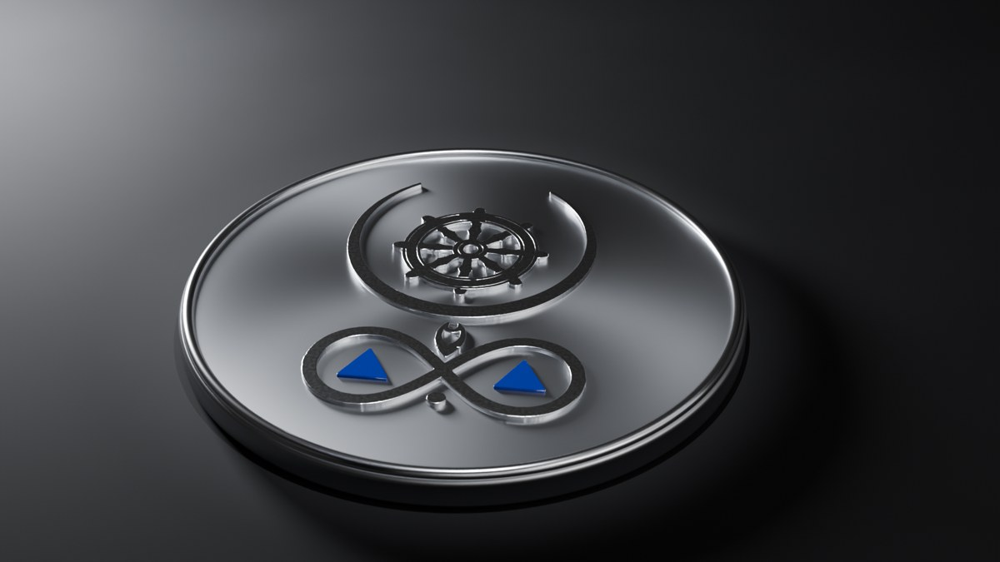
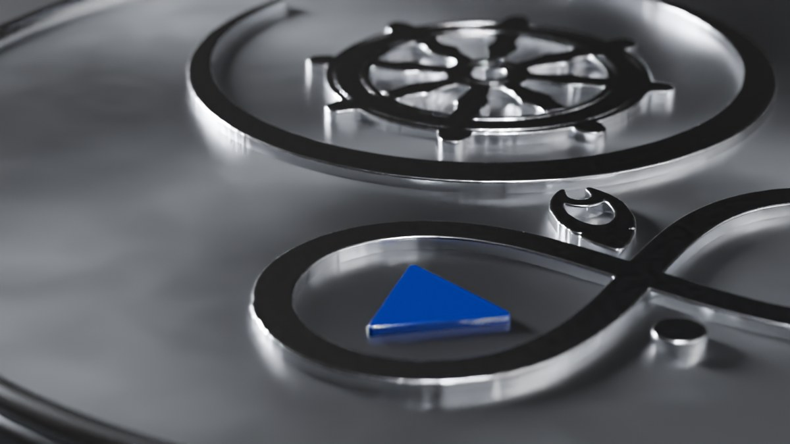
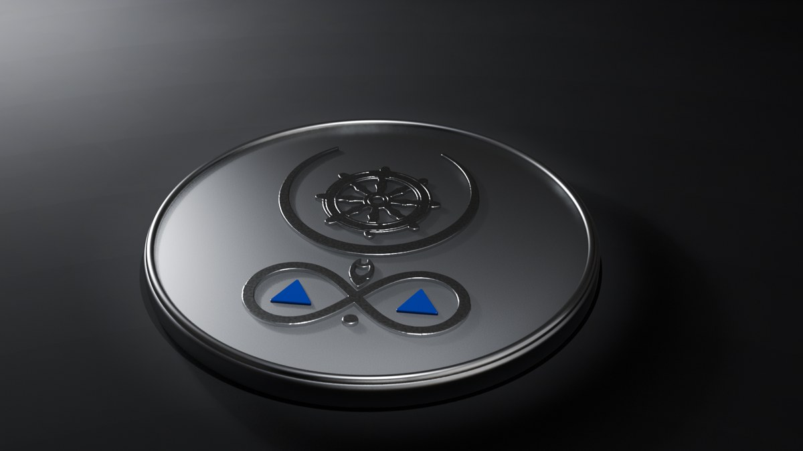
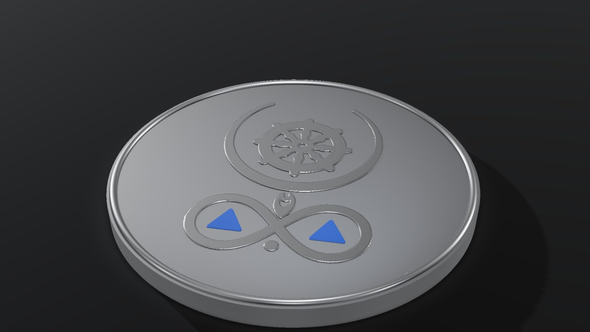

The same Samatwam medallion rendered four ways. Each tool is scored on time to produce against quality of the finished frame, with six production routes to choose from, from minutes to hours.
Times are measured on the cloud machine that made the SAMATVA film (4 CPU cores, no graphics card) or estimated for a typical laptop graphics card (an NVIDIA RTX 3060-class GPU). Quality is scored 1 to 5 from the actual frames shown here.
The fastest route to the same quality is therefore to keep the Blender scripts and send them to a free graphics card. The fastest route to good quality is three.js or Blender's real-time engine (EEVEE) on any laptop with a graphics card. For everyday content, a hybrid works best: three or four photoreal stills per film, moved in 2.5D. All six routes are in section 4.
The Reform medallion, built from the same traced Samatwam mark each time. Same object, same idea; only the renderer changes.




“Per 60 s” is the render time for one minute of finished 24 fps, full-HD film. “Set-up” is the effort to make a new piece with the tool, once the brief is clear.
| Tool | What it makes | Per frame here / on a GPU | Per 60 s here / on a GPU | Set-up | Realism | Motion & type | Best for |
|---|---|---|---|---|---|---|---|
| Film library (canvas 2D) | Code-drawn motion design, typography, maps, data | 0.06 s / same | 1.5 min | Low | ●●○○○ | ●●●●● | Explainers, titles, reels, the type layer of every film |
| Motion Canvas / Revideo | 2D motion with a live timeline editor | ~0.05 s | ~2 min | Low | ●●○○○ | ●●●●● | Fast 2D iterations you can scrub and tweak |
| Manim | Exact diagrams and step-by-step logic | ~0.1 s (720p) | ~3 min | Low | ●○○○○ | ●●●●○ | Processes, flows, equations (Film 09) |
| Lottie | Plays designer-made vector animation | ~0.02 s | <1 min | Needs a .json from a designer | ●○○○○ | ●●●●○ | Logo stings, icons, UI moments |
| Theatre.js | Hand-eased camera and object timelines | — | — | Medium | — | ●●●●● | Making any 3D move feel hand-made |
| three.js + postprocessing | Real-time 3D: PBR materials, bloom, DOF, AO | 9.7 s / 0.02 s | 3.9 h / ~3 min | Medium | ●●●○○ | ●●●●○ | Light 3D inside motion pieces, on a GPU machine |
| three-gpu-pathtracer | Path-traced stills from three.js scenes | minutes / ~10 s | stills only | Medium | ●●●●○ | — | Posters from an existing three.js scene |
| Blender EEVEE | Real-time render of a full Blender scene | 152 s / ~0.7 s | 61 h / ~17 min | Medium (same scripts) | ●●●●○ | ●●●○○ | Fast near-photoreal, but only on a GPU |
| Blender Cycles, film settings | Path-traced animation (what SAMATVA uses) | 15 s / ~0.7 s | 2 h* / ~6 min | Medium (scripts exist) | ●●●●● | ●●●○○ | Hero shots: metal, glass, light |
| Blender Cycles, full quality | Full-HD path tracing, 64 samples | 34 s / ~2 s | 13.6 h / ~48 min | Medium | ●●●●● | ●●●○○ | Posters, key stills, slow-motion closeups |
| Real-ESRGAN | 4× upscaling | 10 s (small frame) / ~0.3 s | stills, short shots | Low | + sharpness | — | 4K posters from HD renders |
| ffmpeg frame smoothing | Motion-interpolated in-between frames | ~0.3 s | ~5 min | None | keeps source | ●●●○○ | Rendering at 8 fps, playing at 24 (used now) |
| OpenColorIO | One colour grade across every source | ~0.01 s | <1 min | Low | + cohesion | — | Making 2D, 3D and stills match |
| Gaussian splats | Photoreal capture of real places from phone video | real time once trained | training needs a GPU | High | ●●●●● | ●●○○○ | Real campus, workshop or product, scanned |
| ComfyUI / Wan video | Generated footage | not possible here | ~10–30 min/clip on a big GPU | High | ●●●○○ varies | ●●○○○ | Mood plates only; hard to keep on-brand |
* The 2 h figure for Cycles assumes rendering at 8 fps and smoothing to 24 fps, as SAMATVA does. At native 24 fps it would be 6 h. GPU estimates assume an RTX 3060-class laptop card.
| Route | How | Time for a 90 s film | Quality | Use it for |
|---|---|---|---|---|
| 1 · Pure motion design | Film library or Motion Canvas for motion and type; Manim for diagrams; Lottie for stings. No 3D. | ~5 min render, here | ●●●○○ | Weekly reels, explainers, announcements |
| 2 · Hybrid stills | 3 to 5 Cycles stills per film (full quality), moved in 2.5D: slow push, parallax and light sweeps in the canvas. Heat-vision passes as stills too. | ~10–25 min render, here | ●●●●○ | Best value on this machine. Campaign films with a premium feel |
| 3 · Light 3D on a laptop | three.js + postprocessing + Theatre.js camera, rendered on any laptop with a graphics card. | ~5 min on a GPU | ●●●○○ | Interactive-looking 3D, product spins, quick iterations |
| 4 · EEVEE on a laptop | The existing Blender scripts, switched to EEVEE, rendered on a laptop graphics card. | ~25 min on a GPU | ●●●●○ | Near-photoreal films on a deadline |
| 5 · Cinematic on this machine | What SAMATVA does now: Cycles at film settings, 8 fps smoothed to 24, composited in the film library. | ~2.5–3 h render, here | ●●●●● | Hero brand films, when there's time |
| 6 · Cinematic on a free GPU | The same Blender scripts, rendered on a free GPU: Kaggle notebooks (about 30 free GPU hours a week) or the SheepIt community render farm. Plates come back as PNGs; finishing stays here. | ~10–20 min render | ●●●●● | Best quality per hour. Every hero film from now on |
| Step | Time, this machine | Time, with route 6 |
|---|---|---|
| Tracing the four marks into parts; measuring the infinity loop | ~2 min | same |
| Style frames (5 Cycles stills, full quality) | ~6 min | ~30 s |
| Heat-vision openings (154 frames, emission only) | ~20 min | ~2 min |
| Five metal shots (520 frames, film settings) | ~2.2 h | ~8 min |
| Smoothing to 24 fps + upscale + typography + assembly | ~15 min | same |